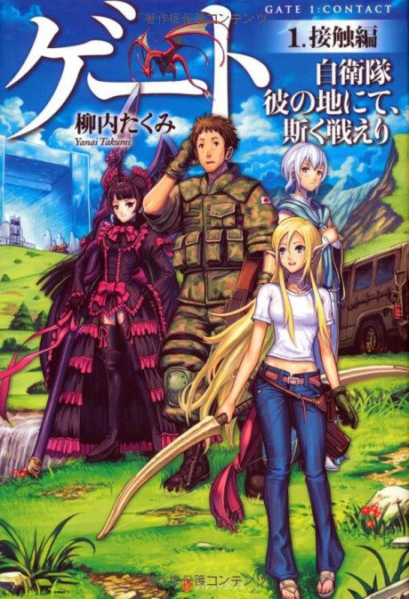
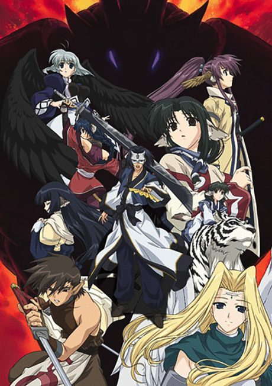
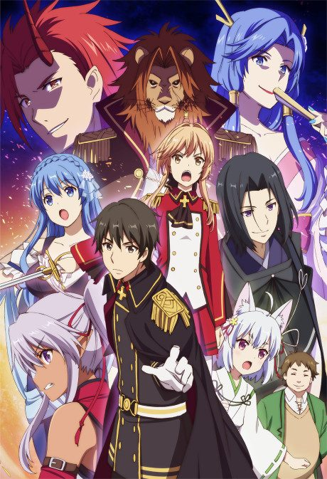
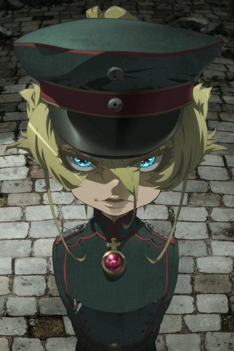

Light novelUnclear
Anime
Light novelUnclear
Anime
Light novelGate
GATE 自衛隊 彼の地にて、斯く戦えり
AniList7.4
Animeter—
2 seasons24 ep
SourceUnclear
Anime finished. Where does the story go next?
StatusNo source yet
We looked for where the anime ends in the light novel but found no source we trust yet. The light novel is 5 volumes, finished.
More like Gate
 Adapted9.0
Adapted9.0
 Manga Vol. 47.3
Manga Vol. 47.3
 Unclear7.6
Unclear7.6

VN7.3
Manga Vol. 57.1
Manga Vol. 117.8